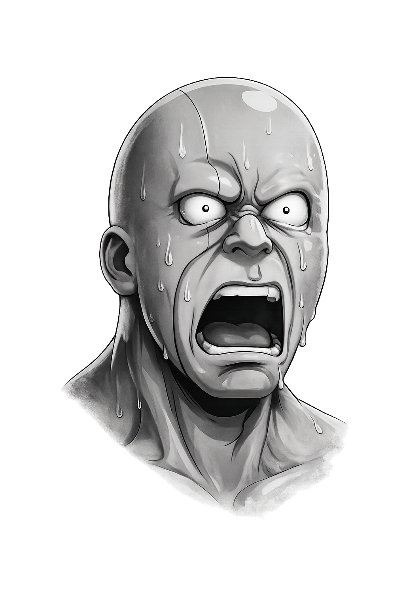
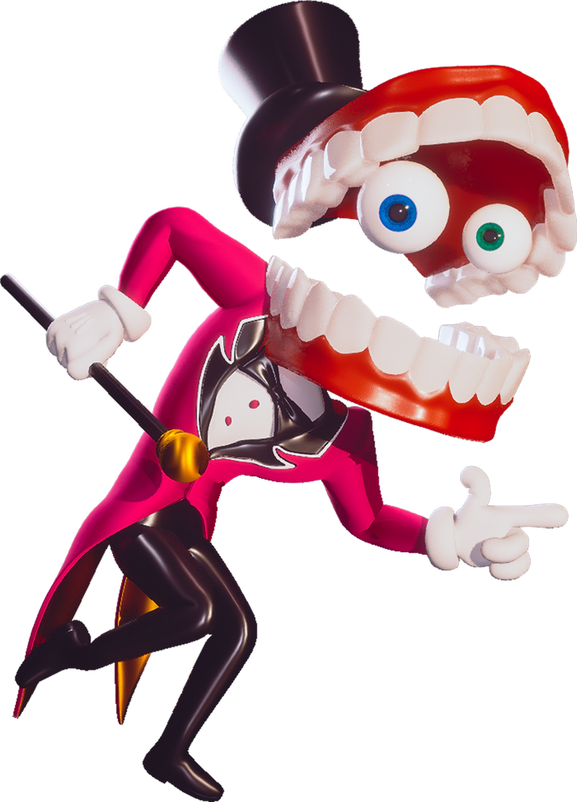
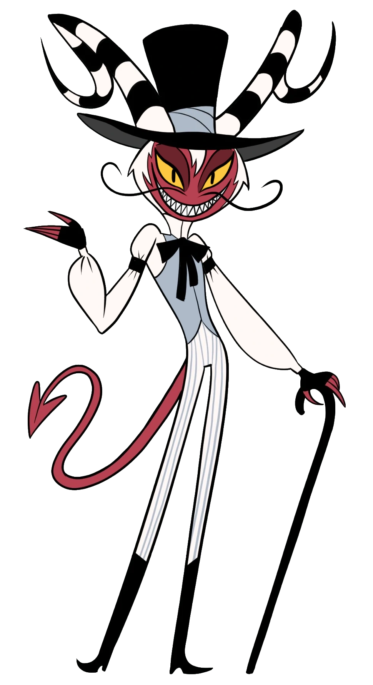
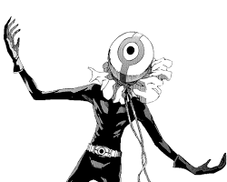

Rodo Balderas
Doblador & Locutor
Sobre mí
Más que una Voz
Rodo Balderas no es solo un locutor; es el alma de cientos de personajes. Desde las salas de grabación de su estudio hasta las producciones más ambiciosas de la industria.
Dando vida a roles protagónicos en series animadas de renombre, la voz de campañas publicitarias icónicas, y un maestro del doblaje que conecta audiencias a través de las emociones. Su versatilidad y pasión por la voz son su firma inconfundible.
Voces y personajes
Personajes interpretados
De criaturas caóticas a héroes explosivos, Rodo presta su voz a personajes que viven en mundos muy distintos, pero comparten algo: una presencia que se queda en la memoria.

Caine
Wally Wackford
Chainsaw ManHablemos
¿Tienes una colaboración o una idea?
Cuéntame qué quieres crear y buscamos la voz, el tono y la emoción correcta para tu proyecto.